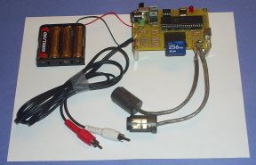

The accompanying book, Build and Program Your Own Video Game Console System, teaches basic soldering, kit construction, and game programming in an easy-to-understand style. If you are new to electronics and programming then this system is for you!
--- Insert picture of book cover and open book with example pages ---
You will need some basic tools to complete the kit: soldering iron, solder, and a pair of wire snippers. These are inexpensive and readily available at your local Radio Shack or other electronics store. (See the support section for online sellers.)
You will also need a PC to develop your own games. You will use your favorite text editor (Notepad works nicely) to create your games. You will use a compiler/emulator written in Java to convert your game files to binary form playable on the system. You most likely have the Java runtime installed on your computer already. If not, the download is free and quick (see the support section). You will need an SD card reader in your PC to copy your finished games to the SD card for play on the system. If your computer does not have a multi-media card reader installed, you can buy a USB multi-media card reader from your local electronics store for under ten dollars. (See the support section for online sellers).
You'll need a TV and a PS/2 computer keyboard to play your games. You can also hook two GameCube controllers to the system for a true gaming experience.

--- Insert a row of pictures of the system in action ---
--- Demo movie:
- Quick segment of building the kit
- Quick segment of editing/emulating the game on a PC
- Moving SD card and playing the system ... lots of segments of sound and graphics
How do I make my own games?
Can I try it before I buy it?
How can I show off my cool new game?
What if I run into a problem?
What if I have other questions?